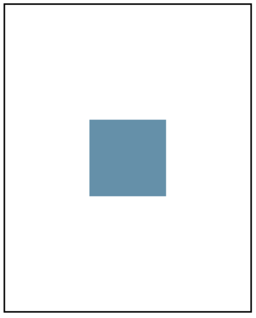

Write a program draws a random color square centered on the graphics canvas. The sides of the square should be SIDE_LENGTH.
(Hint: Use the Randomizer to get a random color for the square.)
編寫一個程序為中心繪製圖形畫布上隨機顏色的正方形。廣場的兩側應該是邊_長度。 （提示：使用隨機函數來獲得一個隨機顏色的方塊。）
